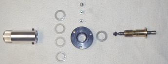

LX90 Focuser adjustments
|
 These adjustments are basically the same as the LX200 (8") OTA. Below is a basic diagram of the focuser assembly. The only modifications I've done to the focuser is to remove the excess grease from the threaded rod, bushing and nylon washers, and to attach a "jiffy focuser" to the knob.
A "Jiffy focuser" is a Jiffy peanut butter lid with a hole for the focus knob and a grommet. This allows for more accurate focusing. I used a small spice bottle top about 1 3/4" in diameter that was white. After the backlash adjustment, degreasing and adding the jiffy, focusing is smooth, light, accurate and a pleasure to use. The nylon washers can be replaced with with 2 Torrington NTA-815 1/2" thrust bearings and a TRA-815 thrust washer, resulting in a focuser that almost feels unattached to the primary mirror and snaps into focus every time. See the focuser bearing mod link in the update above.
Following is the Meade recommended adjustment for the focuser Mirror Shift "Elevate the optical tube so that it is pointing slightly above the horizontal and lock down the declination lock. Rotate the focus knob counter-clockwise as far as possible without forcing it. This will put the primary mirror all the way forward on the baffle tube and extend the focus rod all the way to the end of its travel. Remove the three hex screws that mount the focuser assembly to the rear cell of the telescope. Slowly draw the focuser assembly out of the hole in the rear cell. You will be drawing the primary mirror back down the baffle tube as you pull the focuser out. Pull gently until the primary mirror slider stops against the rear cell. At this point, its a good idea to familiarize yourself with the focuser assembly and how it engages with the primary mirror mount. The focus rod has a hole in its end through which a pin from the primary mirror mount passes. Rotating the focus knob threads the focus rod in and out, pushing or pulling on the pin, which in turn, moves the primary mirror. The rod is not fastened to the pin and may detach during this procedure. If this happens simply slide the threaded rod over the pin to reinstall. Gently push and pull the primary mirror up and down the baffle tube, using the focuser assembly ten to twelve times. This will even out the lubrication on the baffle tube and allow for the smoother movement of the primary mirror. If the travel seems stiffer or more loose in certain areas, repeat several more time to further even out the lubricant. Then push the mirror back into the rear cell, making certain that the pin from the primary mirror mount is through the hole in the focuser rod. Thread in the three hex screws to remount the focuser assembly to the rear cell, but do not tighten. Wiggle the focuser assembly to make sure that the mounting plate is flush and centered with the opening in the rear cell and that the holes are centered around the three hex screws before tightening." Focuser Backlash "Now turn the remounted focuser assembly focus knob all the way clockwise until it stops at the end of its travel. Release the two hex head set-screws on the sides of the shiney aluminum focus knob. Continue to turn the focus knob clockwise until it feels snug (this will remove all of the backlash in the focuser mechanism). With the set-screws still released, turn the focus knob counter-clockwise about 1/16th of a turn. At this point you are making an adjustment for the smoothness action of the focuser. Reset the focuser knob set-screws, first by turning in one of the set-screws until it just bottoms out. Turn in the second set-screw tight (if necessary rotate the focus knob a little so that you can gain access to the second screw), then tighten the first set-screw. This method will insure that you do not tighten the focus knob off-center. Test the focus mechanism to see if the backlash and/or image shift has been eliminated to a large degree. It should be recognized that it is impossible to eliminate it entirely, as it is normal to have some of this effect in this system due to the fact that the mechanism moves the primary mirror on a slider that is mounted on the main baffle tube of the optical tube assembly (a design that allows the greatest range of focus possible for a variety of accessory attachments). At this point you may find that you have resolved the problem, or you may now experience that the focus knob is either too tight, or that the backlash/ image shift has become worse. The counter-clockwise adjustment of the focus knob of 1/16th of a turn is a starting point. If the backlash/ image shift has become worse, then turn the focus knob clockwise again and repeat the procedure using a counter-clockwise turn of 1/32nd of a turn, etc. Should the focuser be too tight to turn smoothly, you can skip repeating the procedure, and simply loosen the set screws of sides of the focus knob and turn slightly counter-clockwise. Then retighten the set-screws as described above."
One last note about focusing your LX90. Since there's a small amount of slop between the mirror pin and the focuser rod hole, the mirror will tend to slip back at high declinations and in warmer seasons. Always finish your focusing adjustments with a counterclockwise turn on the focuser. This "pushes" the primary up the OTA, and places the mirror pin at the bottom of the focuser rod hole. When your final focus action is in a clockwise direction, the mirror pin is left at the top of the focuser rod, and can slip back down to the bottom of the hole. It may not seem like a lot of movement, but it's enough on some scopes to see a noticeable degradation of the image after a few seconds. It's good habit to get into to focus clockwise beyond focus, then counterclockwise to bring the image back into focus again.
|| Back
to Contents || Wedge
adapter || Focuser
|| Azimuth
adjuster || Weight
Set || Dovetail
|| |